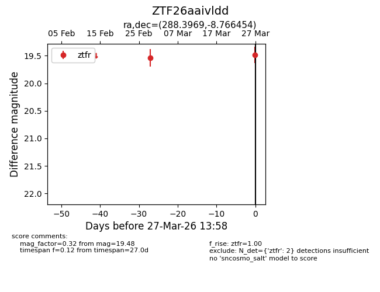
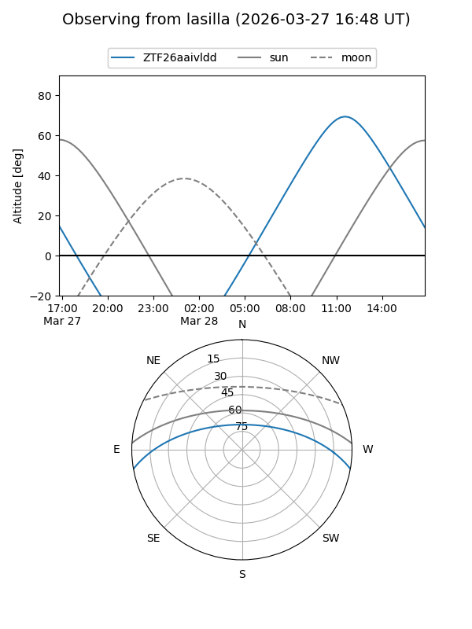
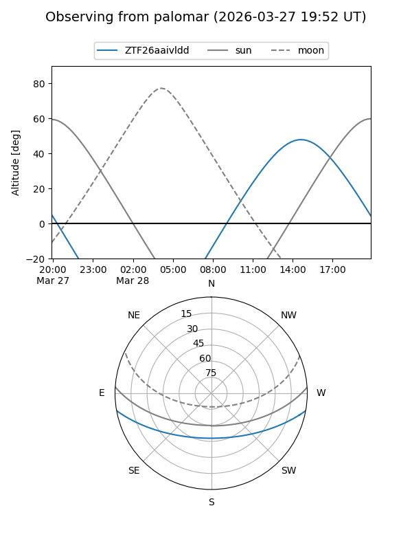

ZTF26aaivldd
Target ZTF26aaivldd at 2026-03-27 14:01
Aliases and brokers:
FINK: link
Lasair: link
ALeRCE: link
alt names
ZTF26aaivldd (ztf,fink_ztf)
Coordinates:
equatorial (ra, dec) = 288.3969,-8.76645
equatorial (HMS+DMS) = 19:13:35.25,-08:45:59.23
galactic (l, b) = (27.5800,-8.88036)
Flags:
Photometry:
last ztfr=19.48
2 ztfr detections
Lightcurve

Visibility


Additional plots